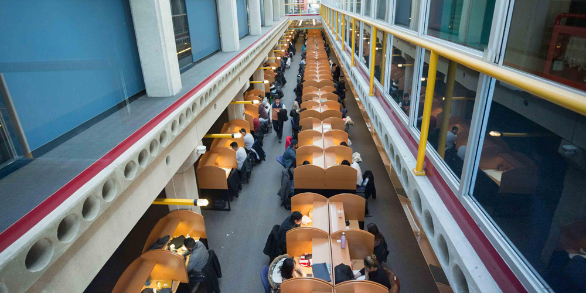
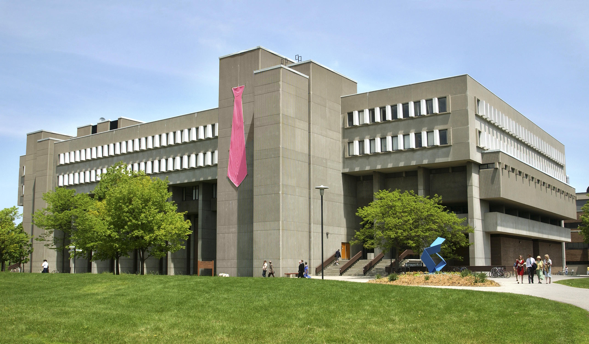

01
Place 1
DC Library
It's the go-to study space for a reason. The DC is lined with comfortable yet efficiently-spaced seating, strong wi-fi, adequate privacy, and low noise levels.
Read more

02
Place 2
MC 5th and 6th Floors
When you're in need of a more quiet and pesonal area, head on up to the upper floors of the MC. Mainly for faculty and grad students, the floors are quiet but have lots of great study spaces. I guess people really don't want to climb stairs...
Read more
03
Place 3
Quantum Nano Centre
The QNC is an open-concept building with a couple of my favourite go-to's when I'm not in the mood to study. First of all, the 2nd floor's standing desk is a great option when you've been sitting all-day and need to move around. As well, when your not in the quiet-studying mood, the QNC's basement has some nice seats next to a piano which you'll often find UWaterloo students practicing on. It can be a much more rewarding and beautiful distraction than the YouTube wormhole.
Read more